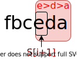
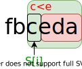
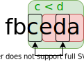
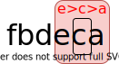
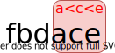

順列¶
順列の数え上げ¶
\(n\) 個の集合から \(k\) 個の要素を順番に取り出すときの順列の総数は、記号 \(_n \mathrm{P} _k\) または \(P(n, k)\) で表される。
順列 (取り出し方) の総数を考える。 \(n\) 個から1つ、残った\((n-1)\) 個から1つ、… と要素の取り出しを繰り返す。取り出し操作を合計 \(k\) 回行うとき、順列の総数は次のように表される。
\[_n \mathrm{P} _k = \frac{n!}{(n-k)!}\]
順列の列挙¶
順列を列挙する場合は、itertools.permutationsが使える。
[1]:
import itertools
S = [1, 2, 3]
for a in itertools.permutations(S):
print(a)
(1, 2, 3)
(1, 3, 2)
(2, 1, 3)
(2, 3, 1)
(3, 1, 2)
(3, 2, 1)
次の順列の生成¶
ある順列が与えられたとき、辞書順に次の順列を生成することもできる。
アルゴリズム¶
- 与えられた順列 \(S\) について、「辞書順最大を満たすsuffix」のうち最長のものを求める。このsuffixを \(S_{i+1 \ldots}\) とする。
- suffixの1文字左にある文字 \(S_{i}\) を含めたsuffixに着目する。\(S_{i}\) の右側は辞書順最大であるから、「次の順列」を作るには先頭の文字 \(S_{i}\) をそれより大きい文字に入れ替えて、 \(S_{i+1 \ldots}\) を辞書順最小となるように並べればよい。なお、順列 \(S\) そのものが辞書順最大のときは「次の順列」がないので、ここで処理を打ち切る。
- \(i<j\) かつ \(S_{i} < S_{j}\) を満たす \(j\) のうち、辞書順最小の \(S_{j}\) を選び、\(S_{i}\) と\(S_{j}\) を交換する。
- suffix \(S_{i \ldots}\) の順序を、辞書順最小となるよう入れ替える。実は交換前後でsuffixに含まれる文字の順序関係が変わらないので、suffixを辞書順最小にするにはsuffix全体を逆順にするだけでよい。反転後の順列が「\(S\) の次の順列」となる。
実装¶
[2]:
def next_permutation(a):
"""順列aを、辞書順で次の順列に書き換える
"""
i = len(a) - 2
while True:
if i < 0:
return False
if a[i] < a[i+1]:
break
i -= 1
if i == -1:
return False
for j in range(len(a)-1, -1, -1):
if a[i] < a[j]:
break
a[i], a[j] = a[j], a[i]
i += 1
j = len(a) - 1
while i < j:
a[i], a[j] = a[j], a[i]
i += 1
j -= 1
return True
[3]:
S = [1, 2, 3]
print(S)
while next_permutation(S):
print(S)
[1, 2, 3]
[1, 3, 2]
[2, 1, 3]
[2, 3, 1]
[3, 1, 2]
[3, 2, 1]